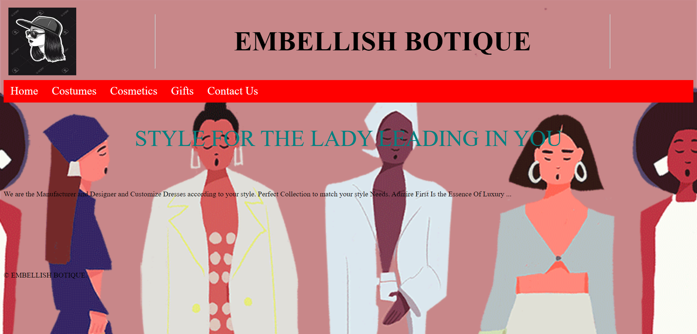
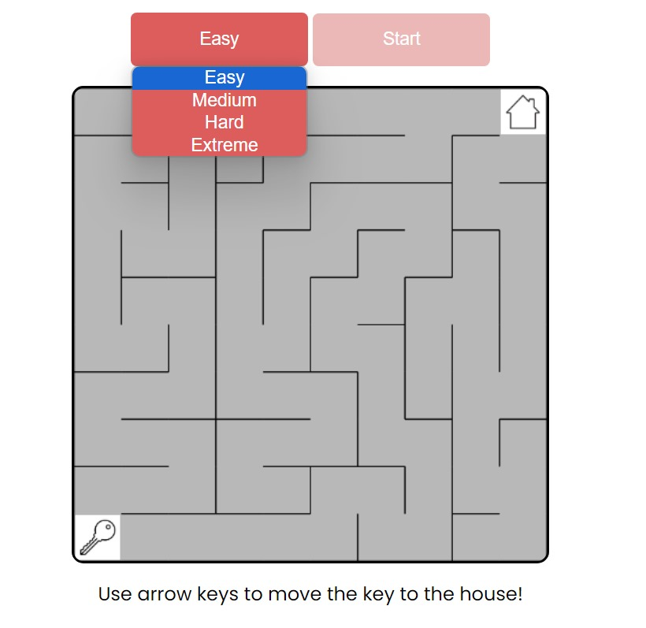

About Me
I'm Shrinivashni S, currently immersed in my second year studying Artificial Intelligence and Data Science. Passionate about unraveling the potential of data-driven technologies, I'm constantly exploring the frontiers of AI to understand its impact on our world. From diving into machine learning algorithms to decoding complex data sets, I'm fascinated by the possibilities AI offers. My journey involves not only learning the intricacies of this dynamic field but also embracing its power to innovate and solve real-world problems. Excited about contributing to the future of technology and eager to explore the intersections of data science and AI to make a positive difference.
Skills
- HTML5
- CSS3
- JavaScript
- Responsive Design
- python
Projects
Project Title 1

I took the helm in conceptualizing and bringing to fruition an upscale online shopping platform centered around an embellished boutique concept. With a meticulous focus on luxury and refinement, I undertook the initiative to craft a comprehensive e-commerce website showcasing an exclusive collection of high-end fashion pieces. Steering the project, my responsibilities encompassed envisioning the boutique's mission, orchestrating its design and development, and meticulously curating a range of opulent dresses, accessories, and statement items. Collaborating closely with a team of designers and developers, I ensured the creation of an intuitive and visually captivating interface, prioritizing user experience at every stage. Further efforts concentrated on brand establishment and marketing strategies, leveraging social media campaigns and targeted advertising to amplify visibility and engagement. The successful launch of this online boutique stands as a testament to my capacity to seamlessly merge technology with the refined nuances of high-end fashion, emphasizing my prowess in project management, user-centric design, and strategic brand promotion within the realm of e-commerce.
Project Title 2

I developed an engaging maze game utilizing HTML, CSS, and JavaScript, showcasing my proficiency in front-end web technologies. This project involved the creation of an interactive and visually appealing gaming environment, challenging users to navigate through intricate mazes while employing their problem-solving skills. Leveraging HTML for structure, CSS for design elements, and JavaScript for game logic, I engineered a seamless user experience. The game's intuitive design and functionality highlight my adeptness in front-end development and my ability to merge creativity with technical expertise to deliver an entertaining and interactive web-based application